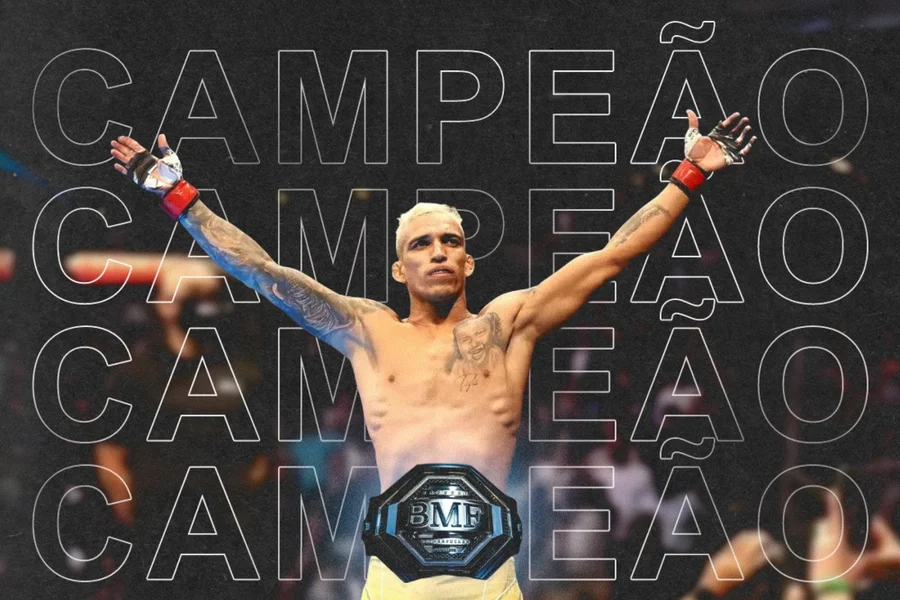
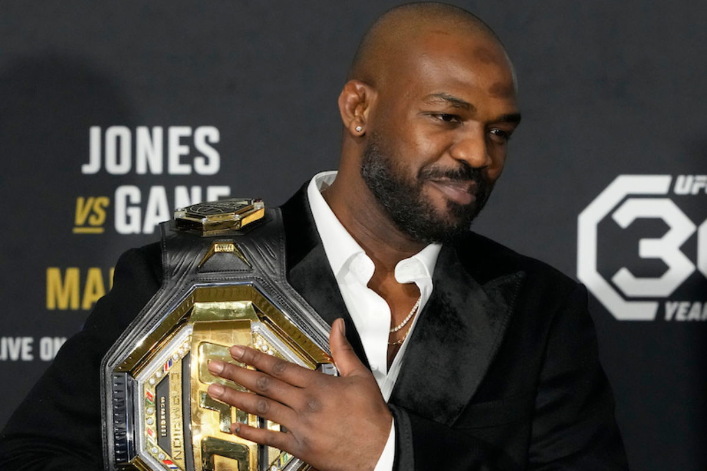
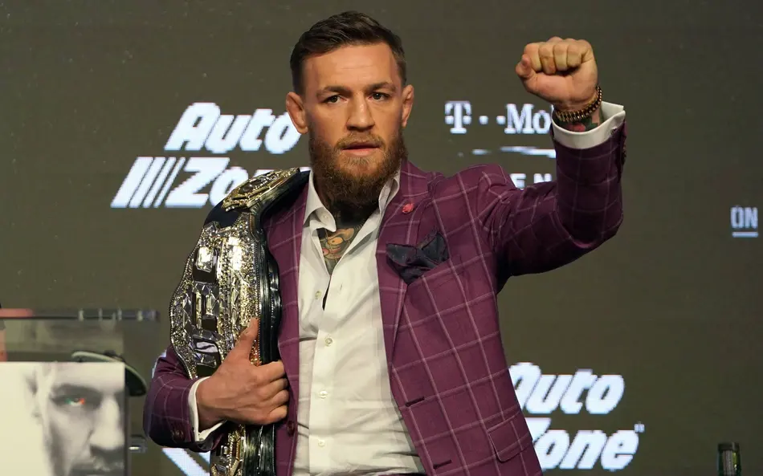

Sobre UFC
O UFC (Ultimate Fighting Championship) é a maior organização de artes marciais mistas (MMA) do mundo, fundada em 1993. O UFC promove eventos de luta que reúnem os melhores lutadores de MMA do planeta, competindo em diversas categorias de peso. O esporte combina técnicas de várias artes marciais, como boxe, jiu-jitsu, muay thai, wrestling e outras disciplinas, proporcionando lutas emocionantes e imprevisíveis. O UFC é conhecido por sua produção de alta qualidade, com eventos realizados em arenas lotadas e transmitidos para milhões de fãs em todo o mundo. A organização tem desempenhado um papel fundamental na popularização do MMA como um esporte global, atraindo uma base de fãs dedicada e contribuindo para o crescimento da indústria das artes marciais mistas.
Alguns Lutadores:

Charles de Oliveira
Charles "Do Bronx" Oliveira é um lutador brasileiro de artes marciais mistas (MMA) que compete no peso médio. Ele é conhecido por sua técnica versátil e sua capacidade de dominar os oponentes no ringue.

John Jones
John "Bones" Jones é um lutador americano de artes marciais mistas (MMA) que compete no peso pesado. Ele é conhecido por sua força e habilidade no ringue.

Conor McGregor
Conor McGregor é um lutador irlandês de artes marciais mistas (MMA) que compete no peso médio. Ele é conhecido por sua confiança e habilidades de combate.

Alex Poatan
Alex Poatan é um lutador brasileiro de artes marciais mistas (MMA) que compete no peso médio. Ele é conhecido por sua técnica e determinação no ringue.